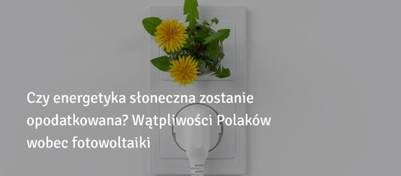

Czy i kiedy inwestycja w fotowoltaiczne się zwróci?
Czy inwestycja w moduły fotowoltaiczne kiedyś się zwróci? Czy rząd opodatkuje korzystanie z odnawialnych źródeł energii? Co to ma wspólnego z 5G? – o wątpliwościach Polaków wobec fotowoltaiki.
N Energia, legnicka spółka energetyczna, przedstawiła wyniki ekspertyz świadomości potencjalnych prosumentów na temat instalacji paneli fotowoltaicznych, które zyskują na popularności wśród właścicieli domów jednorodzinnych. Pomimo tego, wciąż wiele osób ma wątpliwości. W ramach badania zapytano przedstawicieli handlowych, z jakimi obawami spotykają się najczęściej ze strony zainteresowanych klientów.
Według raportu Polskiego Towarzystwa Przesyłu i Rozdziału Energii Elektrycznej, na koniec III kwartału 2020 r., łączna liczba wszystkich mikroinstalacji OZE, przyłączonych do sieci dystrybucyjnej, wynosiła prawie 357 tys., a ich moc zainstalowana ponad 2,3 GW. Większość z nich to prosumenckiemikroinstalacje fotowoltaiczne. Zdobyły one uznanie Polaków, którzy mogą dziś korzystać z programów dofinansowujących inwestycje jak „Mój Prąd” czy „Czyste Powietrze”. Specjaliści twierdzą, że wykorzystywane jest obecnie tylko 5 proc. potencjału polskich domów.
N Energia przeprowadziła anonimowe badanie wśród 120 przedstawicieli handlowych współpracujących z firmą, w którzy w skali miesiąca mieli styczność z 10-100 potencjalnymi klientami. Wyniki pokazują, że instalacje fotowoltaiczne są wciąż postrzegane jako zbyt droga inwestycja, która najpewniej się nie opłaci — ani za 5 ani za 10, ani według niektórych nawet za 30 lat. Niektórzy podtrzymują, że mają zbyt małe rachunki za energię, a więc nie czuje się potrzeby inwestowania w alternatywne źródła energii elektrycznej. 93 przedstawicieli wśród najbardziej kontrowersyjnych kwestii wskazało cenę instalacji.
Sprzedający często słyszą od zainteresowanych klientów obawy, że moduły fotowoltaiczne nie przetrwają kilkulat, by zacząć przynosić zysk: “Dziesięć lat — i do wyrzucenia”. Część z nich woli zaczekać na lepszą i tańszą technologię.
– „Każdy ma sąsiada, który założył PV i mimo to wciąż spłaca rachunki. Drugi ma szwagra elektryka, który mu to zrobi 10 razy taniej. Nie rozumieją, że właśnie nieprofesjonalne podejście do instalacji jest przyczyną jej słabej wydajności” – tłumaczy jeden z przedstawicieli handlowych.
Znawcy tematu tłumaczą, że nie ma podstaw do obaw związanych z jakością komponentów fotowoltaicznych, ani o uzasadnienie ekonomiczne inwestycji. Jak wynika z wielu analiz, również tych przeprowadzonych przez redakcję portalu glogoenergia.pl, średni zwrot inwestycji z uwzględnieniem ulgi termomodernizacyjnej to zaledwie kilka lat.
Obawy o jakość
Potencjalni klienci oraz osoby zainteresowane inwestycją w mikroinstalację fotowoltaiczną mają często obawy odnośnie jakości modułów oraz ich montażu, gwarancji czy serwisu posprzedażowego.
Maciej Juźwik, jeden z ekspertów ds. fotowoltaiki Polskiej Akademii Nauk tłumaczy, iż moduły producentów nie posiadających odpowiedzialności gwarancyjnej na terenie naszego kraju oraz faktycznie mogą nie przetrwać do końca terminu gwarantowanej żywotności produktu. Jeśli jednak wykonamy instalację na komponentach renomowanych producentów, możemy mieć pewność respektowania postanowień wynikających z warunków gwarancji zapisanych w umowie.
Pracownik Polskiej Akademii Nauk zauważa też, że pierwsza instalacja przyłączona do sieci elektroenergetycznej w Polsce powstała już w 2001 r. Została wzniesiona rękami pracowników Laboratorium Fotowoltaiki Politechniki Warszawskiej. Pierwsza taka instalacja w Polsce pracuje bezawaryjnie już od ponad 19 lat, a jej parametry elektryczne są do dziś monitorowane przez pracowników Laboratorium. Ekspert podaje również inny argument – w Japonii instalacja PV wybudowana na modułach Kyocera pracuje już nieprzerwanie ponad 40 lat, a proces starzenia modułów przebiega wolniej niż przewidywał producent. To nie opinia, a fakt.
Demonizacja, stereotypy, niewiedza
Ankietowani zostali poproszeni o podanie najbardziej absurdalnych teorii, w tym teorii spiskowych, które zapadły im w głęboko pamięć po spotkaniach z klientami. Wiele osób ma obawy, że obecnie wsparcie rządu w postaci programu Mój Prąd czy Czyste Powietrze jest tylko pułapką rządu i krokiem do późniejszego opodatkowania mikroinstalacji PV.
– „Już od wielu osób słyszałem: im więcej będzie tego w Polsce, tym dystrybutorzy, tacy jak PGE, będą mniej zarabiać, więc Państwo się na pewno za to weźmie i wprowadzi opłaty dla osób posiadających fotowoltaikę” – tłumaczy jeden z ankietowanych.
Pojawiają się także kwestie szkodliwego wpływu PV, co ma także związek z ostatnimi fake newsami dotyczącymi 5G. Polacy obawiają się wpływu takich instalacji jak panele słoneczne, według nich, ze względu na zdrowie mieszkańców.
Widać zatem, jak istotna jest rola edukacji i szerzenia wiedzy o technologii fotowoltaicznej. Zjawisko fotowoltaiczne opiera się wyłącznie na efekcie fotowoltaicznym. Moduły fotowoltaiczne przekształcają bezpośrednio promieniowanie słoneczne na energię elektryczną. Są to zjawiska optoelektroniczne, a systemy fotowoltaiczne są jednymi z najczystszych źródeł energii. W dodatku źródło energii, jakim jest Słońce, wyczerpie się dopiero za 5-6 mld lat.
– „W procesie konwersji nie występuje pośrednik taki jak energia mechaniczna. W związku z powyższym instalacja nie emituje żadnych pól elektromagnetycznych i nie ma szkodliwego wpływu na organizm człowieka. Natomiast należy pamiętać, że instalacja PV to elektrownia fotowoltaiczna i jej montaż należy powierzyć wykwalifikowanym instalatorom” – tłumaczy Juźwik.
Specjalista wyjaśnia także, że doświadczenia z innych krajów Europejskich pokazują, że są wprowadzane opodatkowania, ale tylko tych dużych instalacji fotowoltaicznych. Właściciele mikroinstalacji nie powinni obawiać się takiego opodatkowania. Ilość energii wytworzonej w mikroinstalacjach nie zmniejsza drastycznie zysków zakładów energetycznych, ponieważ zapotrzebowanie na energię elektryczną w kraju stale rośnie i nadal istnieją głębokie niedobory wytwarzania energii. W związku z dużym przyrostem mikroinstalacji jednak na pewno niezbędne będą modernizacje sieci elektroenergetycznej kraju, w naszym przypadku, zaniedbywanej już od czasów PRL-u.
Brakuje kampanii społecznych?
Ankietowani zostali zapytani także o opinię na temat informacji pojawiających się w mediach na temat fotowoltaiki. Nieuzasadniony lęk i stereotypy temat danej technologii biorą się przede wszystkim z niewiedzy i braku znajomości podstawowych informacji na temat funkcjonowania instalacji PV. Aż 39,5 proc. ankietowanych zaznaczyło, że w przestrzeni publicznej jest brak informacji o aspektach finansowych i technicznych rozwoju fotowoltaiki, 10,5 proc. z nich wskazało na kwestie ekologiczne.
– „Ludzie chcą zostać prosumentami, ale boją się podstępów i tego co może być zapisane drobnym drukiem. Potrzebują prostego zrozumiałego języka, jasnego przekazu na temat serwisu gwarancyjnego i pogwarancyjnego w Polsce” – tłumaczy nam jeden z przedstawicieli.
Rynek fotowoltaiki jest stosunkowo młody, dlatego nie wykształciła się odpowiednia świadomość społeczna dotycząca rozwoju tej technologii. Maciej Juźwik, ekspert ds. fotowoltaiki Polskiej Akademii Nauk, tłumaczy, że brakuje jeszcze tzw. klienta świadomego. Duża część klientów mikroinstalacji fotowoltaicznych decydując się na montaż tego źródła energii kieruje się tylko i wyłącznie aspektem ekonomicznym. Nie jest dla nich istotne zmniejszenie emisji CO2 oraz groźnych pyłów PM2,5 i PM10. Sam dobór komponentów instalacji i ich pochodzenie również spychane są na dalszy plan. Należy pamiętać, że pojęcie ”dobra i tania” instalacja nie istnieje, a jest tylko hasłem sprzedawców oferujących niskiej jakości produkty i usługi.
– „Niska cena, a co za tym idzie, niska jakość jest przyczyną błędów montażowych, a ich skutkami mogą być zarówno niska produkcja, nieszczelności dachu jak i pożar lub zerwanie instalacji przez wiatr. Pamiętajmy, że instalacje PV powinny być projektowane przez osoby do tego uprawnione, a instalatorzy szkoleni i posiadający wiedzę w dziedzinie fotowoltaiki” – tłumaczy Juźwik.
Z kolei Bartosz Bąbrych, prezes zarządu N Energia wskazuje, że nietrudno dostrzec jeden wspólny mianownik obaw Polaków. Te wynikają z braku poczucia bezpieczeństwa, z niepewności ludzi wobec własnej przyszłości i finansów. Stąd bierze się nieufność do państwa, ale też do siebie nawzajem. To brak planowania i perspektywy długoterminowej. Liczy się tu i teraz. Pandemia, kryzysy polityczne, gospodarcze i społeczne tylko pogłębiają problem.
Kluczem jest edukacja
Badania pokazują, że emocje zbyt często towarzyszą w rozważaniu inwestycji w konkretną technologię, w tym fotowoltaikę. Transformacja energetyczna już dziś spowodowała zmiany nie tylko w sposobie wytwarzania energii, ale w naszym otoczeniu. W ślad za zmieniającą się architekturą energetyczną powinna postępować więc solida edukacja, która postawi kamień węgielny do podjęcia korzystnej decyzji na temat inwestycji. Brak świadomości, niewiedza i stereotypy mogą być wykorzystywane do manipulowania społeczeństwem w dyskusji publicznej, w której pojawiają się tzw. fake newsy, coraz groźniejsze swoją drogą. Świadomość społeczna to w dzisiejszych czasach kwestia bardzo istotna, boto właśnie społeczeństwo jest zaangażowane bezpośrednio w transformację energetyczną. Na łamach portalu GLOBEnergia.pl często pojawiają się szczegółowo opisane kwestie, związane z fotowoltaiką i budową instalacji PV. Omawiane są tam tematy bezpieczeństwa, kosztów oraz użyteczności inwestycji w fotowoltaikę.